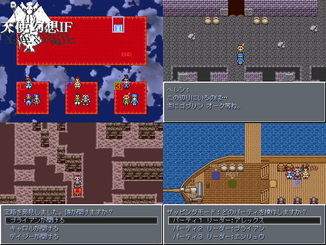

| No,066 【天使幻想IF】 |
| ダウンロード（3.12MB） |
 |
| 【ＨＮ】 一茶人形 【ジャンル】 王道決戦短編ＲＰＧ 【コメント】 神の使いとして現れた天使様と勇者たち(2000RTP)が
世界の滅亡を防ぐため魔王に戦いを挑むヘドが出そうな王道厨ストーリー。 デフォ戦だよ！！ＲＴＰだよ！！シリアスだよ！！なんかにおうよ！？ 正直開発進んでないけどエターなるに負けないよう頑張ってみる。 【スクリーンショット宣伝】 ＳＳ左上：３人のパーティを３つ、好きなように組めるよ。 ＳＳ右上：パーティのリーダー同士で交流が出来るよ。 ＳＳ左下：宝箱はパーティの誰が開けるか選ぶことが出来るよ。 ＳＳ右下：SHIFT押したらどのパーティを操作するか選べるよ。 ちなみに今操作しているパーティを選ぶとリーダーを入れ替えられるよ。 ※完成が危うい場合は特別ページを使わず辞退するつもりです。
|
| 【管理人コメント】 タッグプレイでいろいろできたら・・とか考えるとｗｋｔｋするなｗｗ 王道こそがゲームの根源じゃね？ |